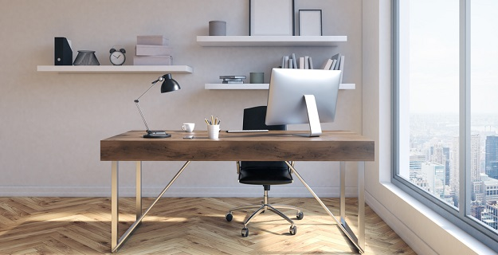

Mniej więcej pod koniec lat 90. XX wieku laptopom udało się zdobyć dosyć dużą część rynku komputerowego, choć nie znaczy to, że wcześniej laptopów nie było. Były, ale ze względu na swoje ograniczenia wydajnościowe oraz dużo wyższe ceny nie były tak chętnie kupowane przez klientów. Pierwszy laptop pojawił się jeszcze pod koniec lat 70., czyli jeszcze przed powszechnym udostępnieniem desktopów. W latach 90. nastąpił jednak szybki rozwój laptopów. Na początku szybko zwiększała się ich moc obliczeniowa, później czołowi producenci, jak np. firmy Dell, Apple czy HP pracowali także nad zmniejszeniem ich rozmiarów i ciężaru, tak żeby ich stosowanie mogło być jeszcze wygodniejsze. Obecnie laptopy są już dostępne w wielu wariantach. Klienci najczęściej wybierają charakteryzujące się naprawdę niewielkimi wymiarami i niewielkim ciężarem ultrabooki, notebooki oraz laptopy 2 w 1, które są połączeniem laptopów i tradycyjnych komputerów PC.
